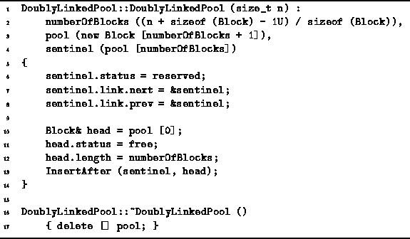

Data Structures and Algorithms
with Object-Oriented Design Patterns in C++
Data Structures and Algorithms
with Object-Oriented Design Patterns in C++
The constructor and the destructor of the DoublyLinkedPool class
are defined in Program  .
The constructor takes as its lone argument an integer
which specifies the size of the storage pool in bytes.
The constructor is responsible for
allocating the memory for the storage pool and for
creating the initial free list.
Since the storage pool starts out empty,
the free list contains initially just a single entry
that treats the entire pool as a one large free area.
.
The constructor takes as its lone argument an integer
which specifies the size of the storage pool in bytes.
The constructor is responsible for
allocating the memory for the storage pool and for
creating the initial free list.
Since the storage pool starts out empty,
the free list contains initially just a single entry
that treats the entire pool as a one large free area.

Program: DoublyLinkedPool Class Constructor and Destructor Definitions
The constructor must initialize the three member variables,
numberOfBlocks, pool and sentinel,
which are declared in Program .
The number of blocks is set to  ,
where N is the desired size of the storage pool (in bytes).
An array of Blocks of length
,
where N is the desired size of the storage pool (in bytes).
An array of Blocks of length  is dynamically allocated using operator new
and the member variable pool is set to point at the array.
is dynamically allocated using operator new
and the member variable pool is set to point at the array.
The last block in the array is used as the sentinel for the doubly-linked free list. The member variable sentinel is initialized as a reference to the last block in the array. Since the sentinel block is never to be allocated, it is marked reserved. The next and prev pointers of the sentinel both are initialized to point at the sentinel itself. Thus, the free list is initially empty.
The entire pool is initially a single unallocated area.
We represent the area by the first block in the pool, pool[0].
The block is marked free and
the length field is set to numberOfBlocks.
Then, the block is inserted into the doubly-linked free list
by calling the private member function InsertAfter.
The InsertAfter function can do the insertion in constant time.
The implementation is left as an project for the reader
(Project ).
Except for the call to operator new
to allocate space for the pool in the first place,
the worst-case running time of the constructor is O(1).
 Copyright © 1997 by Bruno R. Preiss, P.Eng. All rights reserved.
Copyright © 1997 by Bruno R. Preiss, P.Eng. All rights reserved.